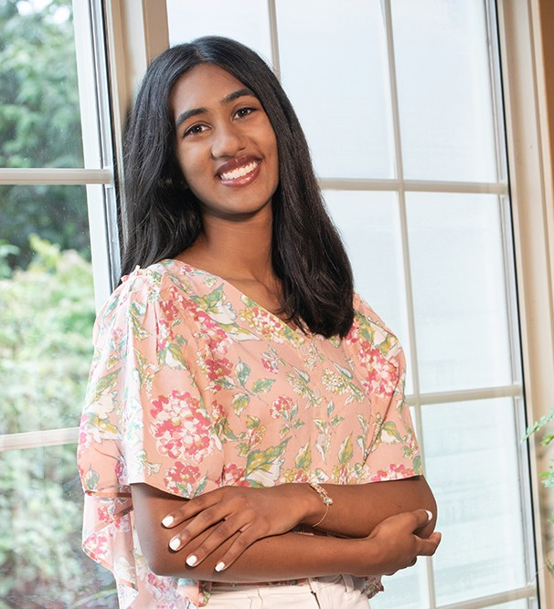

I am a junior at MIT studying Course 2A-6, Mechanical Engineering with a concentration in Robotics. My work spans robotic manipulation, biomechatronics, aerospace engineering, and mechanical design, with a particular interest in assistive technology and the interaction between people and intelligent systems.

Engineering internships and technical teams spanning aerospace, performance, and product development.
Research in biomedical devices, computer vision, mechanical systems, and emerging technologies.
Teaching, academic accessibility support, mentorship, and other contributions to the MIT community.